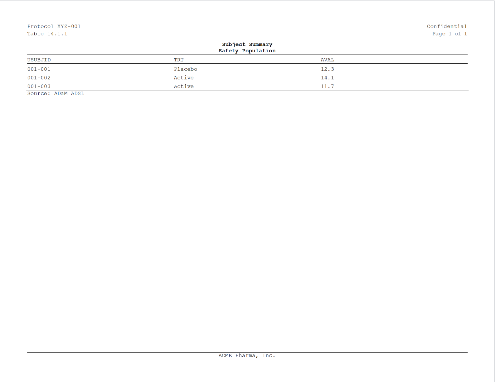

rtfreporter is an R toolkit for generating Rich Text Format (RTF) Tables, Listings and Figures (TFLs) for clinical trial deliverables — geared to one familiar house style we reach for every day: the conventional clinical layout with a borderless header table, a centred title block, a clinical-TFL body table (column-header top + bottom rules, no body borders), and a left-aligned footnote. It is opinionated by design rather than a do-everything RTF engine. The package logo above is literally the kind of page generate_rtfreport() produces.
Why rtfreporter?
We deliberately keep the scope small. rtfreporter is not a general-purpose RTF library; it is a focused tool for the one clinical TFL style we want to ship. That scope cap is the point — it keeps the package small enough to read end-to-end, thorough to test, and realistic to maintain. If the supported layout matches your team’s house style, you get publication-ready deliverables with almost no configuration.
Installation
The package is not on CRAN yet. Install from GitHub:
# install.packages("remotes")
# Latest release (v0.4.0)
remotes::install_github("ichirio/rtfreporter@v0.4.0")
# Development version (latest main)
remotes::install_github("ichirio/rtfreporter")A 30-second example
library(rtfreporter)
library(magrittr)
df <- data.frame(
USUBJID = c("001-001", "001-002", "001-003"),
TRT = c("Placebo", "Active", "Active"),
AVAL = c(12.3, 14.1, 11.7)
)
doc <- rtf_document() %>%
rtf_section(
page = 1,
secinfo = list(
header = rtf_header(rows = list(
c(l = "Protocol XYZ-001", r = "Confidential"),
c(l = "Table 14.1.1", r = "Page {AUTO_PAGE} of {AUTO_TOTAL_PAGES}")
)),
footer = rtf_footer(c(c = "ACME Pharma, Inc."))
)
) %>%
rtf_tables(
# as_rtftables() turns the data into rtftable page objects -- the kind of
# object rtf_tables() is designed to consume (a bare data.frame also works,
# as a convenience). It is also the same entry point for gt / gtsummary /
# rtables tables.
as_rtftables(df, border = "tfl", row_height_twips = 280L),
titles = list(c("Subject Summary", "Safety Population")),
footnotes = list(c("Source: ADaM ADSL"))
)
generate_rtfreport(doc, "T_14_1_1.rtf", overwrite = TRUE)

The generated T_14_1_1.rtf, opened in a word processor.
A focused tool, on purpose
What the small scope buys you:
- One output style, opinionated defaults. No theme zoo, no “render anything” pipeline. The defaults match the conventional clinical TFL look out of the box; you do not have to assemble it.
-
Only the features TFL → RTF needs. Multi-section headers / footers, spanning column headers, automatic page-number fields (
{AUTO_PAGE}/{AUTO_TOTAL_PAGES}), embedded figures, and per-document concatenation viaassemble_rtf(). If a feature would not appear on a real clinical TFL, we resist adding it. - Maintainability over breadth. Saying no to scope creep is what keeps the package small, the tests fast, and the API stable enough to bring through to CRAN.
-
Composable pipe API.
rtf_document() |> rtf_section() |> rtf_tables() |> generate_rtfreport()— the same vocabulary every time, so building a 50-TFL deliverable is a loop.
If your deliverables need a substantially different layout, another tool may serve you better — and that trade-off is intentional. We would rather do one well-defined style really well than do everything passably. You are warmly welcome to use rtfreporter for the styles it supports.
Bring your own table tool
The clinical-table ecosystem has several excellent builders — tfrmt, gtsummary, rtables / tern, gt, flextable and huxtable — and, honestly, no single de-facto standard has emerged yet. rtfreporter does not ask you to pick one, to switch, or to re-state your table in yet another vocabulary. Whatever your team already uses to compute and format the numbers, as_rtftables() reads that object — its column labels, alignment, spanning headers, titles, footnotes and per-cell styling — and carries the metadata through to RTF.
And even if you use a tool we do not read directly, you are still covered: convert its result to a plain data.frame / tibble and rtfreporter lays it out just the same. A bare data.frame carries no display metadata, so you simply re-specify what you want — column headers, alignment, and so on — on rtf_tables() / rtftable() yourself.
For worked, tool-by-tool comparisons see the same report, every framework articles — Demographics and Adverse events — plus Pharmaverse example tables to RTF.
Why RTF?
RTF is an old format, and we are perfectly aware of that. Producing .docx directly, or rendering straight to PDF, is entirely possible and in some respects more modern. We chose RTF on purpose, for the most old-fashioned of reasons: it is the simplest thing that fully meets the need.
For clinical deliverables the workflow we care about is RTF → (optional post-processing) → PDF, and that route is still genuinely useful today:
- Simple grammar. RTF is plain text with a small, well-understood command vocabulary. That keeps the renderer small and auditable — which matters in a regulated setting.
- Easy to patch when you must. Because the output is just text, a last-minute correction can be made by hand or by a small script, without round-tripping through a binary editor.
- Universally openable. Every word processor opens RTF and exports it to PDF, so the final step fits whatever your organisation already uses.
A PDF-first or DOCX-first toolkit could do the same job, perhaps more elegantly or with more features. But for our needs — which are modest, specific, and well-defined — RTF remains the easiest path that is necessary and sufficient. Simplicity, here, is the feature.
Documentation
The full pkgdown site is at https://ichirio.github.io/rtfreporter/:
-
Get started —
vignette("rtfreporter-quickstart") -
Pipe API —
vignette("rtfreporter-pipes") -
Importing tables — bringing gt / gtsummary / rtables / flextable / huxtable objects in with
as_rtftables() - Pagination — splitting long tables across pages
- Headers & footers — section-based running headers
- Borders and rules — the clinical TFL frame
- Worked clinical examples — Demographics and Adverse events
- External API spec — the public API surface
Status & roadmap
rtfreporter is in active pre-1.0 development and carries the lifecycle: experimental badge; the API may still change in backward-incompatible ways before v1.0.0.
-
Latest release:
v0.4.0— the current stable version, installable from GitHub (remotes::install_github("ichirio/rtfreporter@v0.4.0")); not yet on CRAN. It adds the flextable & huxtable adapters,group_bygroup-detection modes, document-wide style defaults, configurablertfreporter.*options,collapse_repeats,blank_row_normalize, and a corrected multi-page page break — seeNEWS.md. -
Development version on
maintracks ongoing work; each pull request advances only the development patch number. A MINOR/MAJOR bump is a deliberate, labelled release action (enforced by theversion-guardCI), not an accident.
Planned release milestones:
| Version | Goal |
|---|---|
| v0.5.0 | CRAN-submission preparation — full R CMD check --as-cran clean, increased test coverage, documentation/metadata polish. |
| v0.6.0 | CRAN registration — initial CRAN release. |
| v1.0.0 |
Stable API — the lifecycle: experimental badge is removed; “the API may change” wording is dropped. |
See NEWS.md for the user-facing changelog and CHANGELOG.md for detailed per-version notes.
Contributing & bug reports
Issues and pull requests are very welcome at https://github.com/ichirio/rtfreporter. Please read CONTRIBUTING.md and the code of conduct first.
License
Apache License 2.0 © 2026 Yoichi Masui. See LICENSE.md.